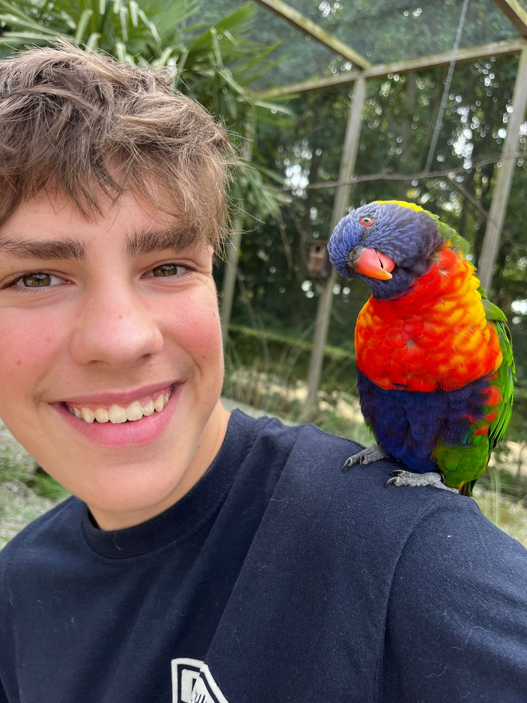

Passie voor Kwaliteit en Traditie 👨🍳
Mijn naam is Sies en mijn passie voor koken is gekomen doordat ik vaak naar Italië ga, en omdat ik veel heb gekookt met mijn moeder vroeger. Italiano Radboud is geboren uit de wens om die authentieke smaken naar Landsmeer en omstreken te brengen. We gebruiken uitsluitend hoogwaardige Italiaanse producten om u een onvergetelijke maaltijd te garanderen. Dit is meer dan afhaal; dit is een stukje Italië.
